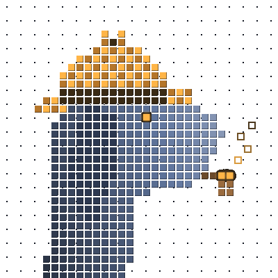

0stracing

TRACEHOUNDPaste a hacker's address or an exploit tx. Get the money trail, who funded it and the wallets tied to it, every link a transaction you can open.
Try Bybit Exploiter OTC Desk (ZachXBT thread) Tron → THORChain
No cases yet
| Time | Token | Risk | Main reason |
|---|---|---|---|
| Loading… | |||
First money the wallet ever received, followed back up to four hops until an exchange, mixer or bridge.
Other wallets the same funder topped up around the same time. Usually the same operator.
Largest recipients, three levels deep. Swaps paid to a fresh wallet are followed through.
Deposits into THORChain, Wormhole, Mayan, deBridge, Across, Stargate, other LayerZero token bridges and Circle's CCTP matched to the payout on the other chain, and followed there.
Wallets forwarding nearly everything to an exchange. The exchange can freeze and identify.
| Time | Query | Route | Wallets | Top finding |
|---|---|---|---|---|
| Loading… | ||||
Loading…
Solana, Base and BSC. Who launched the token, what the contract lets them do, and whether the first buyers are the developer's own wallets.
Every link Tracehound draws between two wallets is a transaction you can open. This page says what each check looks at, where the data comes from, how sure each kind of finding is, and where the trail stops.
The first money the wallet ever received, followed back up to four hops until it reaches an exchange, a mixer, a bridge or a contract. An exchange withdrawal is the strongest lead: the exchange knows the account.
Other wallets whose first money came from the same funder around the same time. A shared first funder usually means one operator.
Recipients ranked by their share of each asset leaving the wallet, three levels deep, four branches per wallet. Tokens of unknown value weigh less than real money.
Money sent into a router or pool is opened up: when the swap pays its output to another wallet, the trace continues from that wallet.
On EVM chains every traced wallet's liquidity positions are checked: Uniswap V2 style LP tokens and V3 position NFTs minted to it. When the LP tokens or the position go to another wallet, when they are minted straight to another wallet, or when pulling the liquidity pays someone else, the money moved without a transfer between the two. The trace links them and continues from the new holder.
Deposits into THORChain, Wormhole, Mayan, deBridge, Across, Stargate, other LayerZero token bridges and Circle's CCTP are matched to the payout on the other chain through each bridge's own index, and the trace continues there (Bitcoin and Tron included).
A wallet that forwards most of what it gets to an exchange is a deposit address. Deposit addresses belong to one exchange account, so the exchange can identify and freeze.
Exchanges, mixers, bridges and known exploiters come from open label data, the wallets exchanges publish in their proof-of-reserves reports (Solana and Tron included), Dune (with a key) and labels added by hand. A wallet already tagged as an exploiter is flagged.
Loot that comes back to the wallet that paid the attacker's gas proves one operator controls both sides.
Each flow of a known asset is priced at the hour it moved (DefiLlama). A token that only calls itself "USDT" gets no dollar value.
The longest daily window with no activity, read as sleep. Weak evidence, only a hint.
The chain itself proves it: an exchange withdrawal or deposit, a bridge's own index matching both sides, loot back to the funder, a public exploiter label.
A strong pattern that still has innocent explanations: shared first funder, a likely deposit address without an exchange label, money leaving through a bridge or mixer.
A hint to check by hand: a contract as the first funder, an ordinary wallet at the end of the funding trail, the time zone.
Mint or freeze authority still set (Solana). On Base and BSC: honeypot, trading tax, mint function, blacklist, paused transfers, hidden owner, proxy, unverified source (GoPlus).
Who paid for the developer's wallet and when, a mixer behind it, what the developer and the other wallets of that funder launched before and how many of those tokens are dead now.
How much of the launch bag the developer has already sold.
First buyers funded by the developer, the developer's funder or one shared funder; wallets that bought in the launch block.
Share held by the developer's wallets and the top 10, pools and program accounts excluded; holders created in the last 24 h; one wallet handing the token out to many, or many sending it back to one.
Wallets of known pump rings among early buyers and holders, a developer funded from a ring, and a launch funded the way a ring funds its launches.
Whether pool liquidity can be pulled, bot-like trading, socials reused from earlier tokens.
Each finding adds points; 25+ is medium risk, 50+ high. The points are set by hand today and are being calibrated against what happened to checked tokens 24 h later (table below).
Bridges run by exchanges still end the trace on the source chain.
The sender of a tx is its largest input and outputs back to an input are change. CoinJoin and batched exchange payouts break that reading.
Only the exchange wallets published in proof-of-reserves reports are known; other services show as busy wallets unless labeled by hand.
Wallet histories there need a paid Etherscan plan. Token checks on Base and BSC skip the developer's funding and past launches.
Three levels, four branches per wallet, up to 80 wallets per case and two chain crossings. Small branches below 2% of a flow are left out.
Tracehound never says who someone is. It shows where the money went and who can identify the owner.
Loading…
Loading…
Groups of wallets that buy almost nothing but the same few tokens, early, funded from linked wallets: the people pumping those tokens, not lucky traders. Found by the daily smart money scan; each ring shows how it launches, what it pumped and how those tokens ended.
A trading agent that plays the token check's verdicts with pretend money. Every token the sampler checks is a chance to buy: the agent skips high risk, stakes less the higher the score, and sells when the developer sells, the price doubles, it halves, the pool disappears or a day passes. Next to it, the naive baseline buys every one of those tokens for $100 and holds for a day. No real money until the agent beats that baseline for weeks.
Your wallet signs a one-time message to prove you own the address. It costs nothing, sends no transaction and gives the site no access to your funds. No email, no password.
Your plan, what you used today and what each plan includes.